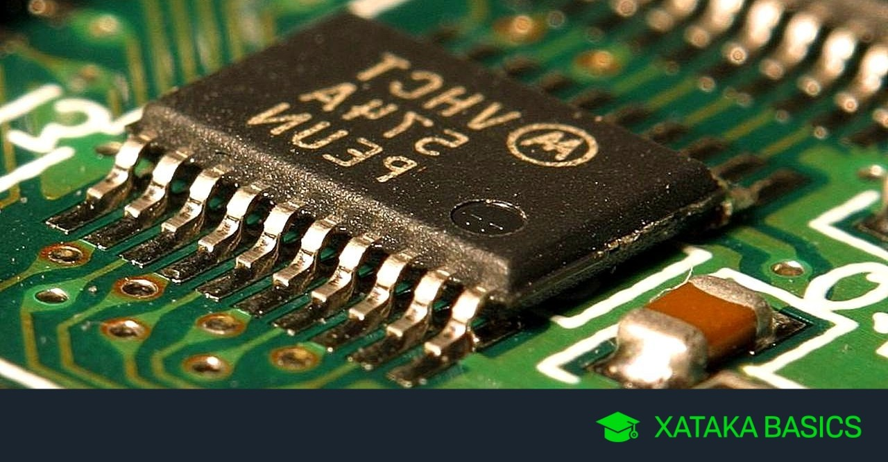
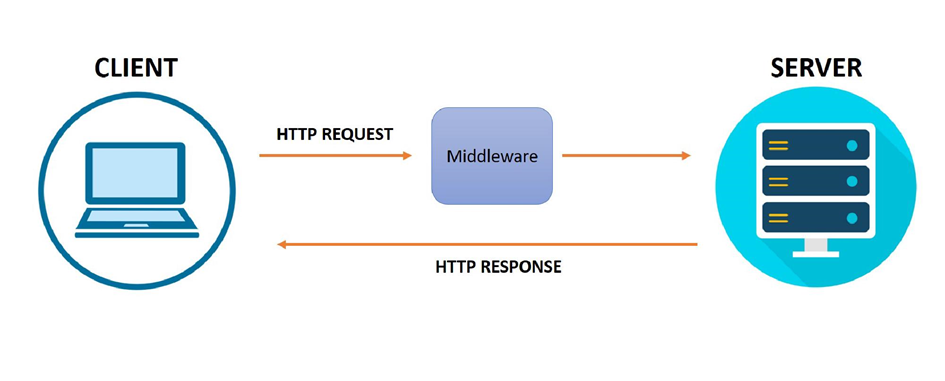

Conceptos Básicos de la Informatica
Software
Es todo el conjunto intangible de datos y programas de la computadora.
Clasificaciones del Software
Sistemas Operativos
El sistema operativo es el gestor y organizador de todas las actividades que realiza la computadora. Marca las pautas segun las cuales se intercambia informacion entre la memoria central y la externa, y determina las operaciones elementales que puede realizar el procesador.
Lenguajes de programación
Mediante los programas se indica a la computadora que tarea debe realizar y como efectuarla , pero para ello es preciso introducir estas érdenes en un lenguaje que el sistema pueda entender. En principio, el ordenador sdlo entiende las instrucciones en cédigo maquina, es decir ,el especifico de la computadora. Sin embargo, a partir de éstos se elaboran los llamados lenguajes de alto y bajo nivel.
Software de Aplicaciones
El software de aplicacién esta disefiado y escrito para realizar tareas especificas personales, empresariales o cientificas como el procesamiento de ndéminas, la administraci6n de los recursos humanos o el control de inventarios. Todas éstas aplicaciones procesan datos (recepcién de materiales) y generan informacién (registros de nómina). para el usuario.

Hardware
Los componentes y dispositivos del Hardware se dividen en Hardware Básico y Hardware Complementario
El Hardware Básico: son las piezas fundamentales e imprescindibles para que la computadora funcione como son: Placa base, monitor, teclado y raton.
El Hardware Complementario: El Hardware Complementario: son todos aquellos dispositivos adicionales no esenciales como pueden ser: impresora, escaner, camara de video digital, webcam, etc.
Grupos de Hardware
Segun sus funciones, los componentes y dispositivos del hardware se dividen en varios grupos y en el siguiente orden:
- Dispositivos de Entrada
- Chipset
- CPU
- Unidad de Control
- Unidad aritmético-lógica
- Unidad de almacenamiento
- Memoria Principal o primaria (RAM o ROM)
- Memoria Secundaria o Auxiliar (Disco Duro, Flexible, etc.)
- Dispositivo de Salida
Conectividad
Conectividad es la capacidad de un _ dispositivo (ordenador personal, periférico, PDA, mdvil, robot, electrodoméstico, automdvil, etc.) de poder ser conectado (generalmente a un ordenador personal u otro dispositivo electrénico) sin la necesidad de un ordenador, es decir en forma auténoma. Asimismo es el grado de conexién entre entidades sociales, gubernamentales y de cualquier indole entre si.
- Bluetooth
- Red de computadoras
- WI-FI
- WAITANG
Firmware vs MiddleWare
| Firmware | MiddleWare |
|---|---|
| El firmware es un bloque de instrucciones de programa para propositos especificos, grabado en una memoria de tipo no volatil (ROM, EEPROM, flash, etc), que establece la logica de mas bajo nivel que controla los circuitos electrénicos de un dispositivo de cualquier tipo. Al estar integrado en la electronica del dispositivo es en parte hardware, pero también es software, ya que proporciona lédgica y se dispone en algun tipo de lenguaje de programacién. Funcionalmente, el firmware es el intermediario (interfaz) entre las Ordenes externas que recibe el dispositivo y su electrénica | Middleware es un software que asiste a una aplicacion para interactuar o comunicarse con otras aplicaciones, software, redes, hardware y/o sistemas operativos. Este simplifica el trabajo de los programadores en la compleja tarea de generar las conexiones que son necesarias en los sistemas distribuidos. De esta forma se provee una solucién que mejora la calidad de servicio, seguridad, envio de mensajes, directorio de servicio. |
|  |  |
Bit
El bit es un acrónimo Binary digit (Digito Binario). Un bit es un dígito del sistema de numeración binario.
Mientras que en el sistema de numeración decimal se utilizan 10 dígitos, en el binario se usan solo 0 y 1. Un bit o dígito binario puede representar uno de esos 2 valores, 0 ó 1
Se puede imaginar un bit, como una bombilla que puede estar o encendida o apagada.
Byte
Un Byte se define como la unidad básica de almacenamiento de la informacion, habitualmente compuesto por 8 bits (unidad mínima de informacion que puede ser 1 -encenido- o 0 -apagado-)
A partir del byte surge el Kb (kilobyte), el Mb (megabyte), el Gb (gigabyte), etc. que representan distintas potencias de 2, puesto que se trabaja en sistema binario. Asi el Kb son 2 elevado a 10 (1024), el Mb 2 elevado a 20 (1048576) y asi sucesivamente.
La notaci6n del Sistema Internacional de Unidades utiliza el sistema decimal y trabaja sobre potencias de 10. Un Kb serian 10 elevado a 3 (1000), un Mb 10 elevado a 6 (1000000), etc.